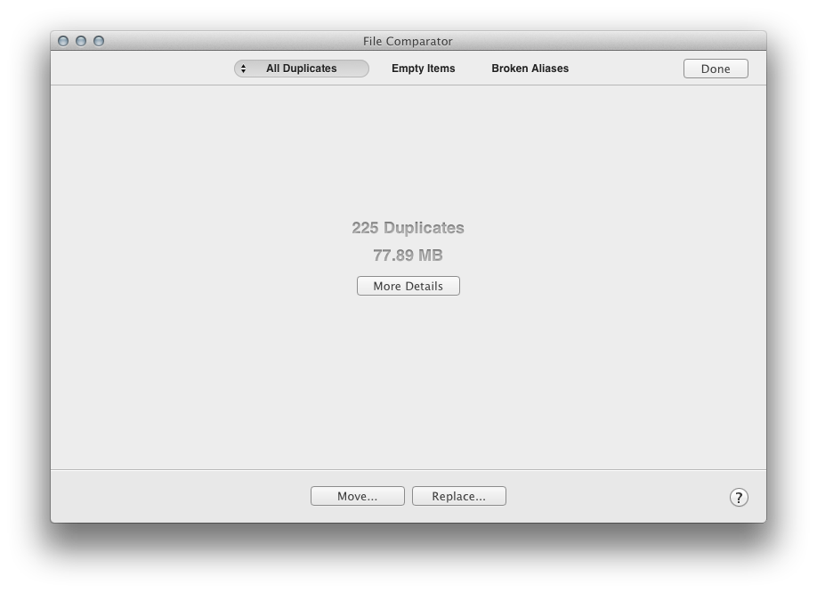

In automatic mode, the results window show a summary of All Duplicates, Empty Items and Broken Aliases by tabs.
The double arrow on All Duplicates shows a menu to select specific group: Files Duplicates, Images Duplicates or Audio Files Duplicates
• Move:
Show a menu to choose to move all duplicates to trash or a specific folder.
• Replace:
Replace all duplicates with an alias to the original file
Note: Move and Replace actions are only applied on the selected tab.
• Done:
Return to the start interface.